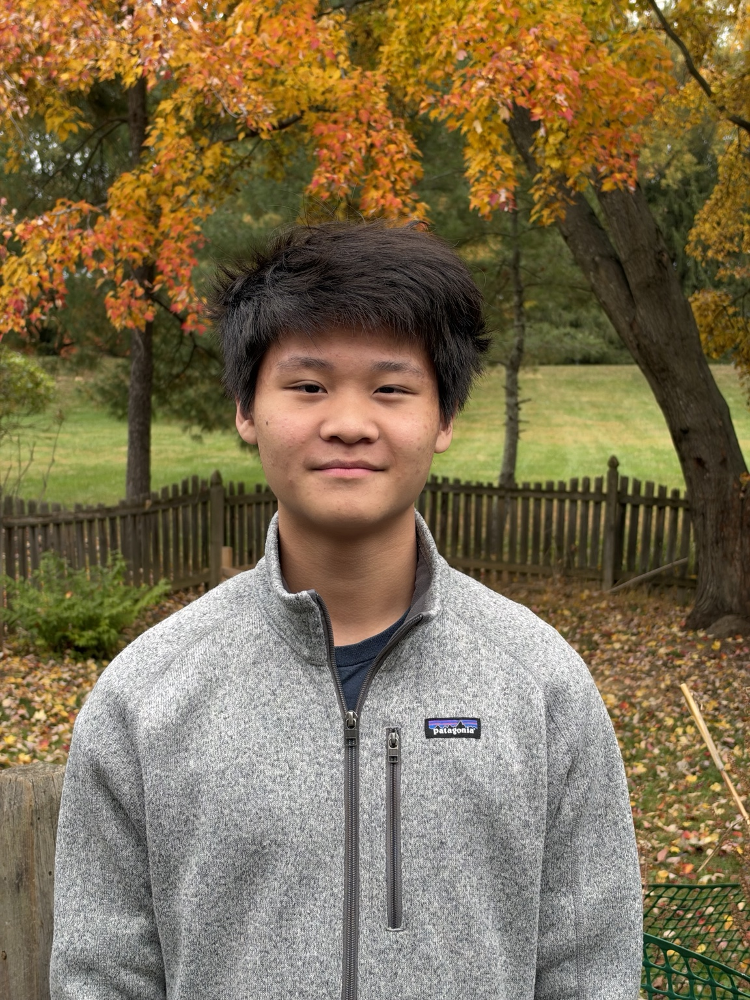
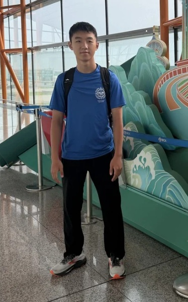

A little knowledge. A lifetime of making a difference.
We’re iCARE, a student club under CAPA-MC. We make first-aid education approachable and help young people build the confidence to care for their community.
Compassion brings us together. Care moves us forward.
iCARE brings students together to explore first aid, learn about emergency readiness, and share practical safety knowledge. You don’t need a medical background to start—just curiosity, commitment, and a willingness to help others.
Different interests. One common goal: learning how to help and bringing that knowledge to others.

Joseph Xu
Founder
Richard Montgomery High School
A sophomore, certified lifeguard, and assistant swim coach trained in CPR, AED use, and basic first aid. Joseph began working on iCARE with Aaron in June. He enjoys reading, cooking, and computers.

Aaron Wu
Co-Founder
Thomas S. Wootton High School
A CPR-certified sophomore at TWHS, Aaron draws inspiration from his family’s background in medicine and biology. His grandparents’ heart-health challenges helped motivate his interest in this initiative.
Yuhan Qiu
VP of Design and Arts
Winston Churchill High School
A sophomore interested in medicine and emergency care. Yuhan hopes to build practical first-aid skills and support others with similar interests. She enjoys badminton, baking, drawing, and movies.
Noah Lee
VP of Training and Recruitment
Richard Montgomery High School
A sophomore who joined to raise cardiac-arrest awareness and promote emergency readiness. Noah enjoys tennis, robotics, clarinet, Pokémon cards, and spending time with friends.
What we do
Learn it. Practice it. Pass it on.
Our focus connects approachable education with opportunities to grow as a volunteer and student leader.
01 / LEARN
First-aid education
Explore health and safety topics in a welcoming space where questions are encouraged.
CPR and AED awareness
Basic first-aid knowledge
Discussion and shared learning
02 / PREPARE
Build practical confidence
Connect classroom curiosity with practical learning and encourage the next step toward formal training.
Demonstrations and guided practice
Emergency-readiness awareness
Encouragement to pursue certification
03 / CARE
Serve our community
Turn learning into outreach by helping others discover why first-aid knowledge matters.
Student-led educational materials
Community awareness activities
Teamwork and leadership experience
From our presentation
A conversation can be the first step.
At past events, our members introduced CPR and AED awareness and invited participants to think about their confidence in responding to an emergency.
We want to keep creating welcoming opportunities to ask questions, see demonstrations, and take the next step toward formal training.
Looking ahead: a hands-on education station for community events, illustrated in our club presentation.
Our proposed iCARE CPR station · Club presentation, October 2026
Growing with intention
What’s next for iCARE.
As our club develops, we’re building a thoughtful foundation for future educational activities and community service.
These are planned areas of growth. Event dates and participation details will be shared when confirmed.
01
Learn from experienced professionals
Seek guidance to strengthen the accuracy and quality of our educational materials.
02
Bring awareness to more people
Explore school club fairs and future CAPA events as opportunities for community outreach.
03
Broaden our learning
Explore additional first-aid topics, including diabetes awareness and allergy management.
04
Grow our team
Welcome committed students, including members with CPR or basic life-support certification.
iCARE Events
Activity Schedule
Check back for upcoming club meetings, workshops, and community outreach events.
Interested in first aid, health, or serving your community? Connect with our club through the recruitment QR code to express your interest and learn more.
Help us build educational activities, share safety knowledge, and grow a community of students who care.
Do I need prior first-aid or healthcare experience to join?
No prior medical background is needed to express interest. iCARE encourages learning and formal certification, and welcomes students who already have relevant training.
Do iCARE activities provide formal training certifications?
Educational outreach and awareness activities do not by themselves provide certification. Any formal certification opportunity will be identified separately with its instructor, requirements, and registration details.
When and where does the club meet?
Meeting dates, locations, and event details have not yet been posted here. Use the recruitment link or QR code to connect with the club for updates.
Can I earn Student Service Learning (SSL) hours?
Eligibility and documentation depend on the specific activity. Please confirm approval and requirements with the club organizer before volunteering.
How is iCARE connected to CAPA-MC?
iCARE is a student club under the Chinese American Parent Association of Montgomery County (CAPA-MC), sharing its commitment to students and community involvement.